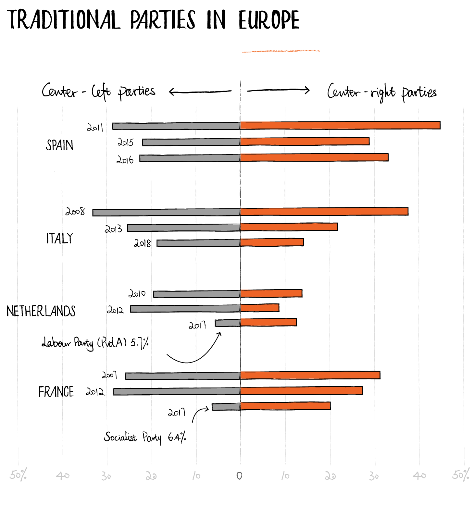
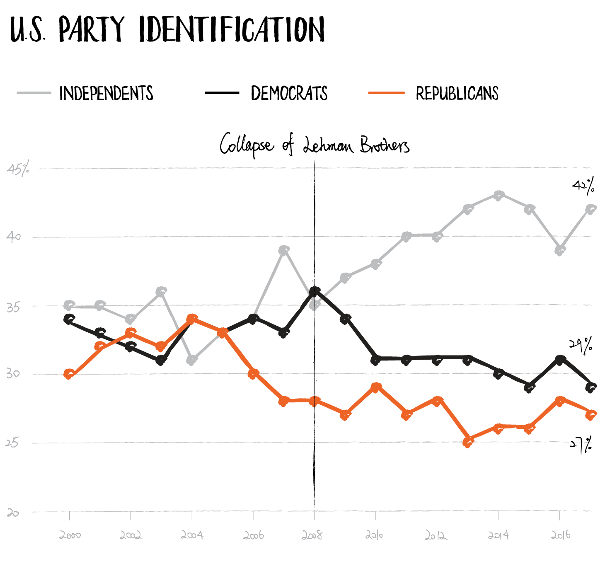

Blame Attribution
I first became interested in blaming behavior after reading Bukowski et al.'s 2017 study on blame attributions related to the economic crisis that resulted from the widespread failure of mortage-backed securities in 2008.
The economic crisis imposed profound negative effects on the lives of many people. The affected hadn't just lost their money due to misfortune or poor personal decisions — their money had essentially been swept away by chaotic ripples through a global financial sector that had been intentionally indundated with bad debt. Financial hardship is bad in any case, but the 2008 economic crisis presented those who lost money with a unique psychological challenge when it came to explaining their losses.
Psychologists took interest in their dilemma. Many people felt they had clearly been wronged, yet they could not point the finger of blame with any certainty. The inclination of a person wronged is to ask, "by whom?" In 2008, the answer was not obvious. For the majority of the public with no working knowledge of the credit sector, identifying the perpetrators of the mortgage crisis was virtually impossible. This unusual state-of-affairs presented an advantage to researchers seeking to understand crisis and blaming behaviors.
The first question tackled — If people don't know who to blame, why are they still trying?
This question is useful in drawing the line between group-level and individual-level studies of crisis and blaming phenomena. At the group-level, it is hard to get started on an answer. A group may blame something on an outgroup for any number of reasons, none of which may have anything to do with the thing for which they are assigning blame. Intergroup tension is a constant of life, and the inherent motivation of groups to slight one another makes the analysis of a particular blame attribution a nebulous affair.
At the individual level, however, the question becomes more tractable. Why would an individual not want, but need to blame somebody for their recent fiduciary catastrophe? Social Psychologists' answer was perceived control — one's subjective assessment of their ability to affect change in the world around them. The basic premise was that a crisis without a clear-cut villain would deal an especially strong blow to the perceived control of its victims. They had been wronged, there was nothing they could do about it, and worst of all, they were not at all special in their predicament — the very same had happened to millions of others.
At this point, researchers investigated the notion that people would use blaming as a way to restore their sense of control. The idea had an evolutionary flavor — a victim is naturally inclined to seek retribution on their oppressor. In this case, the revenge plan was foggy, but assigning blame is always the first step, and so taking that step may have been a way of regaining control. In other words, a person with a known enemy, all else being equal, ought to feel s/he has more control over his/her situation than a person with an unknown enemy; even if only by virtue of having more actionable information at their disposal.
Bukowski et al. performed a series of experiments to see if blaming did indeed restore perceived control, and, if so, how control restoration differed when different blame-targets were chosen. Their method was to administer an assessment of subjects' perceived control, induce the subject into blaming a certain potential causative agent, and then re-assess perceived control after the fact. Their results were somewhat perplexing. Blaming did restore control, but only if blame was attributed to a specifically defined group. This is to say that blame only restored control when the blame-target was a group of people that one could bring into their imagination easily, as opposed to abstract blame-targets such as 'the global financial system'.
This remains aligned with the original hypothesis that blame is the first link in a chain of supposed actions. 'The global financial system' and other such abstract entities are hardly the type of adversaries to inspire hope, and ergo perceived control, in the mind of the blamer. If one's opponent is something so powerful yet so intangible, the prospect of victory in one's revenge mission is slim.
An interesting wrinkle emerged with the finding that specificity determined whether blaming could restore one's perceived control. As the experiments continued, it turned out that group-specificity was not simply one of several criteria a blame target must fulfill — it was all that mattered. Perceived culpability (that is, the degree to which the blamer thought the blame-target was actually responsible for the crisis) had no observable effect on control restoration. Blaming 'bankers' — a reasonable, albeit reductive, blame-ee — worked just as well as blaming 'gypsies' — a preposterous choice of perpetrator for a housing crisis.
The authors conclude that attributing blame for a crisis to a social group is a process that inherently restores perceived control, and that the same can not be said for blaming in general. The details of the crisis played little part in the equation — it only seemed to matter that there was a crisis at all. The who, what, when, where, and why of the 2008 economic crisis were not relevant. What was relevant was the fact that a large number of people had experienced their sense of control diminish and that, evidently, engaging in group-blaming is therapeutic to the human self-concept; at least insofar as it restores the feeling of agency.
2018
Bukowski et al.'s paper pushed the question of crisis-blaming into deep water, which is why I entered the research area myself in 2018. Prior to their study, the line of thought had developed in a way that was largely agreeable to most of contemporary psychological theory. Faced with their results, the field now had to make some tougher commitments. Furthermore, Bukowski et al.'s paper had raised a slew of new questions. For instance, was prejudice a factor? There is certainly a case to be made that negative attitudes towards gypsies could have allowed subjects to experience control restoration after blaming them, but this suggests a different nature of blaming than the crisis-blame literature has suggested thus far. Prejudice facilitating control restoration would suggest something of a 'vicious cycle of bullying' dynamic; whereby a victim seeks control by victimizing another. Another question is whether one could blame a group that they themself belong to and still restore their control. If true, this would have serious implications for intergroup relations theories, many of which would likely pose that a decreased sense of control would motivate one to show favoritism, not malice, towards one's ingroup.
My attention was drawn even closer by Reuters' 2018 report, Notes from the 2008 Financial Crisis: 10 Years On. A voting-data finding stood out:
Center-left and center-right political parties around Europe were losing their vote-shares.

Reuters Political Correspondent Noah Barkin offers that left-wing parties may have seen the greater decline due to their policy platforms aimed at ensuring citizens' economic well-being. When the economy collapses, the party that campaigned on government protection of the public's finances can be said to have failed, while opposition parties that made no such guarantees carry no such guilt.
This explanation holds water, but also carries many of the same mysteries of the research discussed earlier. Are party-leaving and party-blaming comparable? On one hand, it makes sense to equate leaving one's party after a crisis with blaming the party, even if blaming it for its reaction to the crisis and not the crisis itself. On the other, if perceived culpability is indeed influencing the assignment of blame, then the greater defection from left-wing parties may better indicate a motivation to avoid blame than to assign it.
Another problem is determining how control plays into changing party-affiliations. Group dynamics theory would have it that groups would galvanize, not disperse, under the pressure of control threat. However, group dynamics does hold a reason a person would leave one party for another: joining a social group is a known control restoration technique. However, it only works if the group is perceived as agentic, or as having the control that the restoration-seeking person lacks. In crisis, non-predominating groups with big promises become attractive to control-threatened individuals who are disillusioned with the mainstream group they belong to currently. This account of control-restoration is consistent with the movement of European voters away from moderate parties following the 2008 financial crisis.
The United States, however, saw a slightly different outcome. The major parties lost voters, just like in Europe, but the party affiliation that saw the greatest rise was independent.

Granted, the United States does not have a parliamentary system of government like Europe does, but it does have prominent third parties with views more extreme than those of the major parties. Further, despite the decline in party registration, the major American parties did not see a significant displacement from elected offices. This may suggest that the American remedy for diminshed control was individualism, not groupishness. In any case, the constrol-restorative account of crisis remains tangled.
Re-framing
While studying the blame-attribution literature, I came to believe that the results of Bukowski et al. 2017 and similar studies were so theoretically sticky because they had addressed the question of blame at the individual and group levels simultaneously. They were studies of individual behavior towards groups. Having operated at both tiers of organization, it was challenging to reconcile the findings with prior theory at either. Understanding crisis-blaming required a re-framing of the problem, so I set about developing a theoretical model that could incorporate the person-level psychology of agency with the group-level psychology of intergroup conflict.
I first approached this challenge in a study design paper that outlined the model and how it should be tested experimentally. The first task was to review the group dynamics research on control restoration. Here is an excerpt from the paper's introduction:
The favoritism of one’s in-group over one’s out-group is central to human nature (Sumner 1906). This favoritism is referred to as in-group bias and is thought to arise in response to competition over limited resources (Sherif et al., 1961), threats to self-esteem (Billig & Tajfel 1973), and unsatisfactory conceptions of identity (Tajfel 1974). This is to say that, respectively, we favor the needs of our group over other groups, we view our group more positively than other groups as a function of self-esteem maintenance, and we consider our group memberships to be at least partially constitutive of our identities. While these components of group mentality are therapeutic to the self and its in-group, they often act in concert to produce unfavorable results within the broader intergroup arena. Notable among these byproducts of in-group bias are prejudice, xenophobia, and ethnocentrism.
And how this all matters in crisis:
Crisis can be reasonably defined as a temporally constrained series of conditions and events that, due to their destructive and alarming nature, significantly reduce feelings of personal control in the affected populace. In accordance with principles of the self as it reacts to differing levels of perceived control, times of crisis often foster the genesis of situationally designed social groups and/or increase membership of existing groups that operate to similar ends. From this, we can reason that the greater the impact of the crisis, the more compelled people will be to turn to groups to provide a sense of control. It follows that lower perceived personal control results in higher dependency on one’s in-group to provide perceived agency. As one’s identity becomes increasingly derived from one’s group membership, one becomes increasingly susceptible to in-group bias.
In this account, we can see how social groups are formed and shaped as a control-restorative response to crisis without any mention of blaming. However, it is my cotention that blaming, though it is intrinsically restorative to the individual, becomes the flashpoint of intergroup conflict in crisis when it becomes a coordinated intragroup behavior. The group one joins to restore one's agency